Instalación y Configuración de Hugo
Voy a crear una página en Hugo mediante visual studio code y voy a desplegarla mediante comandos en Github y Netlify.
1. Instalación de Hugo
- Instalo la versión extendida de Hugo mediante el comando mostrado.
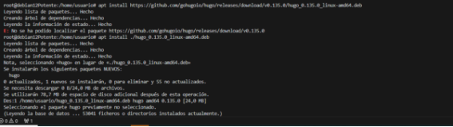
2. Creación de un nuevo proyecto en Hugo
- Utilizo el comando:
bash hugo new site <actividad22_2_RAU> - Esto generará la estructura inicial del proyecto.
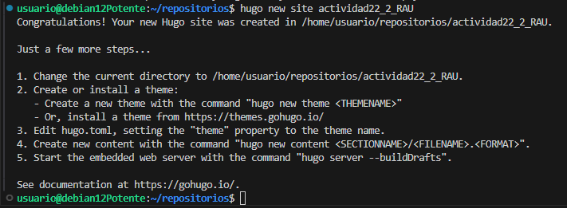
3. Configuración del repositorio en GitHub
- Me meto a GitHub y creo un nuevo repositorio vacío con el nombre de la actividad.
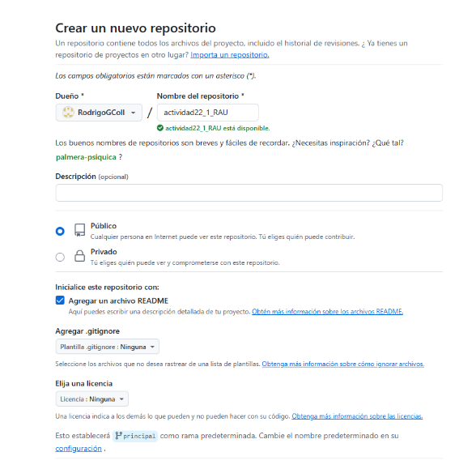
- Clonar el repositorio:
- Para clonar este repositorio utilizo este comando
bash git clone https://github.com/RodrigoGColl/actividad22_1_RAU.git
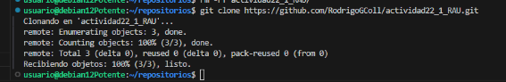
4. Gestión de temas en Hugo
- Añado un tema al proyecto:
- Descargo el tema ananke y lo añado como submódulo:
bash git submodule add <URL del tea de ananke> themes/<ananke>
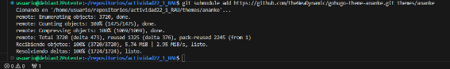
- Configuración del tema:
- Añado la referencia al tema en el archivo de configuración:
bash theme = "<ananke>"
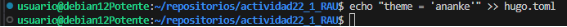
- Actualización del submódulo:
- Para la actualización del módulo ejecuto:
bash git submodule init git submodule update
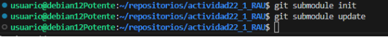
-
Configuración del índice
-
Así he configurado el índice de la página
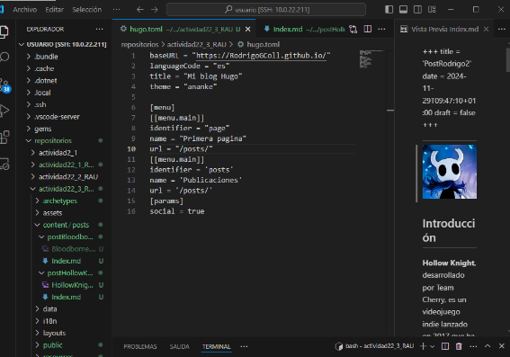
5. Subida del proyecto a GitHub
- Preparar los cambios para subirlos:
- Añado los archivos:
bash git add . - Confirmo los cambios:
bash git commit -m "lo subo" - Subo los cambios al repositorio:
bash git push -u origin master
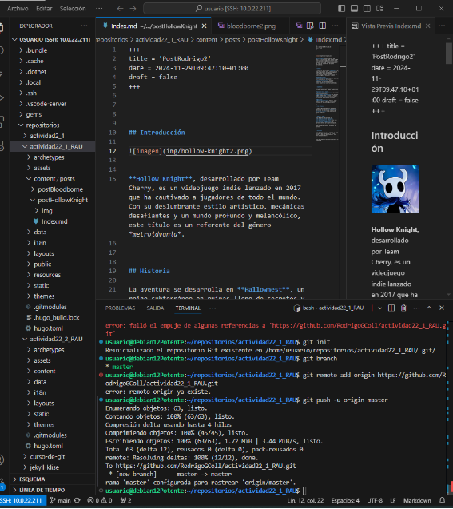 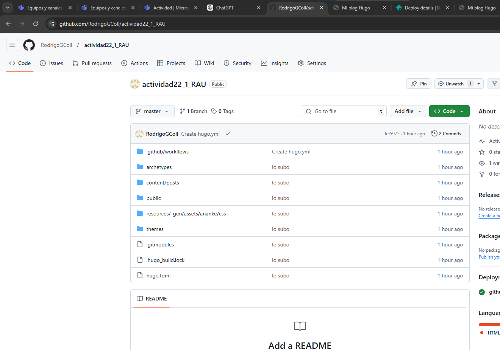
6. Despliegue en Netlify
- Vinculación del repositorio en Netlify:
- Accedo a Netlify, creo un nuevo sitio desde un repositorio y selecciono el proyecto que he hecho.
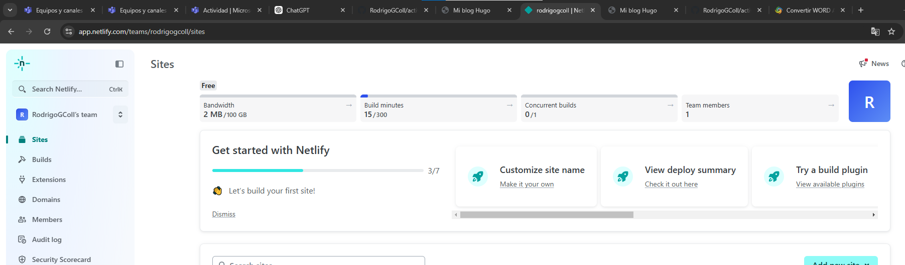
- Configurar el dominio y desplegar el sitio:
- Ajusto las configuraciones necesarias para el dominio y el despliegue, seguiré los siguientes pasos.
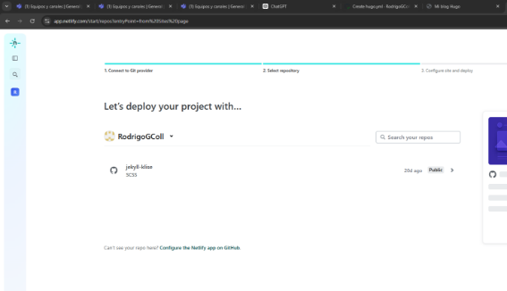 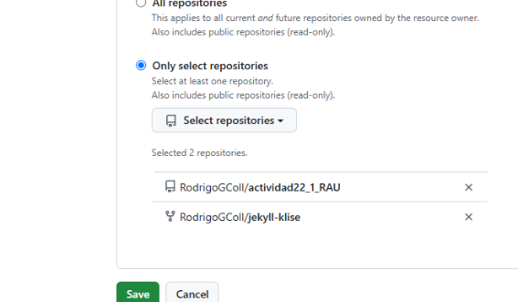 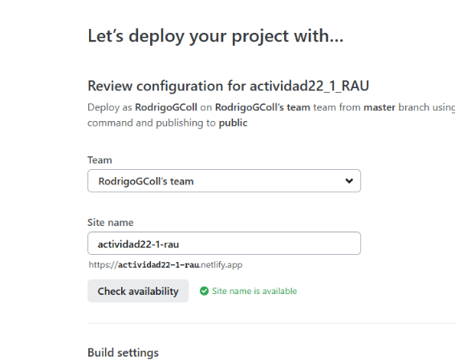 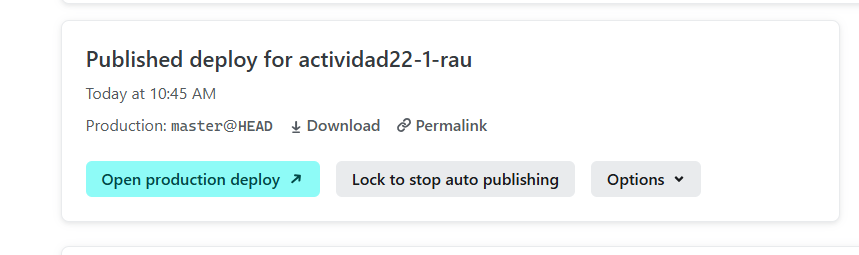
- Aquí ya se ha completado